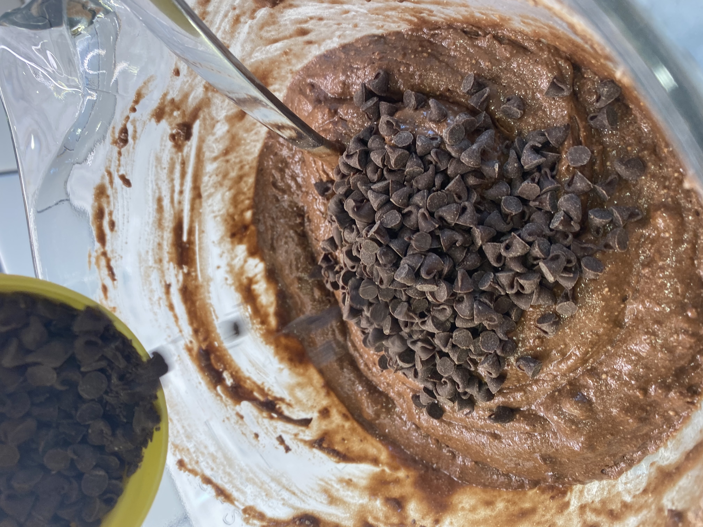

Ingredients
All ingredients layed out, shown from above.
Mixing
Whisking the dry ingredients while the egg and butter mix.

Combining
Combining both mixtures into the electric mixer, mixing together.

Pouring
Pouring the mix into a loaf pan, greased with butter.
Display
Displayed cut into slices with fall decorations.
Display
Displayed cut into slices with fall decorations.
Self Assesment
3 Things that Went Well:
- All ingredients and required tools were ready this time, I forgot some last time.
- Cooling off bread went well, took longer than expected but it turned out great.
- The whole family enjoyed, including my Grandparents.
3 Things that Didn't Go Well:
- Edges were more crisp than I would've liked, maybe cooked too long.
- Some of the chocolate chip sank and stuck to the bottom of the loaf pan.
- I realized we were out of butter just pior to starting, delayed our start time by 30 minutes.
Cleaning Score
I would give myself a 10/10 on the cleaning score. I kept my workspace clean as I went, and utilized time during baking to finish up cleaning my workspace.